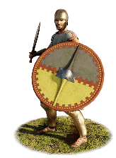

RTR: Imperium Surrectum
RTR: Imperium SurrectumEtruscan Light Swordsmen


Class: light · Category: infantry · Men per unit: 40
Description
Recruited from among the wealthier peasantry and urban classes of the Etruscan city-states, these Etruscan Light Swordsmen are fast and aggressive footmen fit for close-quarters combat. While they go into battle in sleeved tunics, these men are wealthy enough to equip themselves with bronze greaves and Italic Montefortino or hellenistic Attic-Phrygian helmets. For defence, they carry a large round shield with a central vertical barleycorn spine, which gives a good protection against missile fire and allows them to move quickly across broken terrain. Offensively, they use swords which often feature Celtic-style trilobate pommels and are worn on the right side, in the Roman and Celtic fashion. Their agility makes these men excellent for flanking attacks, chasing down skirmishers, and fighting in rough terrain, however, their unarmoured torsos make them ill-suited for prolonged melee combat against more heavily armoured units.
Historical background
A reliance on aggressive shock tactics is a well-attested feature of Etruscan military doctrine as encountered in ancient historiography. Narrative accounts of early Italic warfare repeatedly record Etruscan contingents abandoning missile exchanges to force immediate hand-to-hand combat, as seen in descriptions of engagements in 480 BC and 310 BC. Livy mentions that when the Romans marched to relieve their allies at Sutrium, who were being besieged by the Etruscans, the Etruscan troops eagerly cast aside their missile weapons to directly charge the Roman lines with drawn swords (Livy, History of Rome 9.35.1 and 9.35.3).
Livy narrates a fantastic tale of the Battle of Lake Vadimo (310 BC) fought between the Romans and Etruscans: “So savage was the feeling on both sides that, without discharging a single missile, they began the fight at once with swords. The fury displayed in the combat, which long hung in the balance, was such that it seemed as though it was not the Etruscans who had been so often defeated that we were fighting with, but some new, unknown people. There was not the slightest sign of yielding anywhere; as the men in the first line fell, those in the second took their places, to defend the standards. At length the last reserves had to be brought up, and to such an extremity of toil and danger had matters come that the Roman cavalry dismounted, and, leaving their horses in charge, made their way over piles of armour and heaps of slain to the front ranks of the infantry. They appeared like a fresh army amongst the exhausted combatants, and at once threw the Etruscan standards into confusion. The rest of the men, worn out as they were, nevertheless followed up the cavalry attack, and at last broke through the enemy's ranks. Their determined resistance was now overcome, and when once their maniples began to give way, they soon took to actual flight. That day broke for the first time the power of the Etruscans after their long-continued and abundant prosperity. The main strength of their army was left on the field, and their camp was taken and plundered" (Livy, 9.39.6-9). Following the progressive subjection of Etruria during the 4th and 3rd centuries BC, Etruscan city-states were incorporated into the Roman alliance system as socii, obligated under the formula togatorum to provide infantry contingents for Roman military campaigns. This was a list maintained by the Romans for the purpose of determining the annual military contributions of their Italian allies (Baronowski, ‘The “Formula Togatorum”’, in: Historia: Zeitschrift Für Alte Geschichte 33-2 (1984), pp. 248-252).
While the Etruscan aristocracy celebrated their social distinction through intricately decorated and presumably expensive cinerary urns featuring cavalry scenes with Hellenic panoply, the common infantryman is depicted on votive bronzes with elements of the Roman panoply alongside their native or Hellenistic gear (Taylor, Etruscan Identity and Service in the Roman Army: 300–100 B.C.E.’, in: American Journal of Archaeology 121-2 (2017), p. 276). Indeed, a major archaeological example and the basis for this unit is an Etruscan bronze figurine recovered from Telamon (Florence, Museo Archeologico Nazionale inv. 10646). The figurine depicts a warrior who fights without a cuirass, although he wears a pair of greaves. Positioned in a low defensive crouch, he defends himself with a round shield with a vertical spine in his left hand and prepares to strike his enemy with a trilobate-pommelled sword in his right hand (only the hilt survives, not the blade). He wears greaves, a close-fitting sleeved tunic, and an elaborate helmet. Otherwise equipped like a Roman soldier, the Telamon soldier wears a Hellenising Attic-Phrygian helmet (characterized by the prominent brow protector and low hemispherical dome that rises to a Phrygian peak). Similar helmets, a common enough Greek style, are well attested in pre-Roman Etruscan art (Taylor (2017), p. 285). This illustrates well how non-elite Etruscan soldiers adapted to the Roman organization while still using their local equipment. The capacity of Etruscan industrial centres to outfit such contingents remained substantial; during Scipio’s African expedition in 205 BC, the city of Arretium alone was able to supply the Roman army with as many as 3,000 shields and a similar number of helmets (Livy 28.45.15–6).
Stats
| Rank in roster | Rank in roster | Rank in roster | Rank in roster | ||||||||
|---|---|---|---|---|---|---|---|---|---|---|---|
| Men per unit | 40 | ███······· 31% | Attack | 10 | ███······· 27% | Charge bonus | 10 | ████······ 35% | Defence | 29 | ████······ 41% |
| · armour | 3 | ██········ 22% | · defence skill | 22 | ██████···· 60% | · shield | 4 | █████····· 49% | Morale | 11 | ████······ 40% |
| Discipline | Impetuous (may charge without orders) | Training | Highly trained | Recruitment cost | 1,452 dn | ██········ 15% | Upkeep per turn | 531 dn | ██········ 24% | ||
| Turns to recruit | 2 |
Weapons
| Primary | Secondary | Primary | Secondary | Primary | Secondary | Primary | Secondary | ||||
|---|---|---|---|---|---|---|---|---|---|---|---|
| Attack | 10 | — | Charge bonus | 10 | — | Type | melee · blade | — | Damage | piercing | — |
Defence
| Primary | Secondary | Primary | Secondary | Primary | Secondary | Primary | Secondary | ||||
|---|---|---|---|---|---|---|---|---|---|---|---|
| Total | 29 | — | Armour | 3 | — | Defence skill | 22 | — | Shield | 4 | — |
Condition and terrain
| Hit points | 1 | Ground: scrub / sand / forest / snow | 0 / 0 / 0 / 0 | Charge distance | 30 | Formations | Square |
Technical stats
| Time between blows (primary / secondary) | 2.5 s / — | Extra fatigue in hot climates | 0 | Collision mass per man (1.0 is normal) | 0.92 | Spacing between men: close / loose | 1 × 1.2 m / 2 × 2.4 m |
| Default ranks | 5 |
In battle: Can sap · Good stamina
Who can recruit it
A core roster unit for one faction, which can raise it anywhere it holds the right building:
Any faction holding one of the provinces below can field it.
Exactly what a settlement must have, route by route (3)
| Building | Also requires | Building | Also requires | Building | Also requires | ||
|---|---|---|---|---|---|---|---|
| Direct Rule | Tier 2 Military Industrial Complex · Tier 1 Colony | Homeland | Garrison Building or Tier 1 Military Industrial Complex | Any settlement | Tier 2 Military Industrial Complex · Etruscan area of recruitment · Dependency or Indirect Rule · Tier 1 Colony not built |
Areas of recruitment

| Zone | Provinces | ||||||
|---|---|---|---|---|---|---|---|
| Etruscan | 8 |